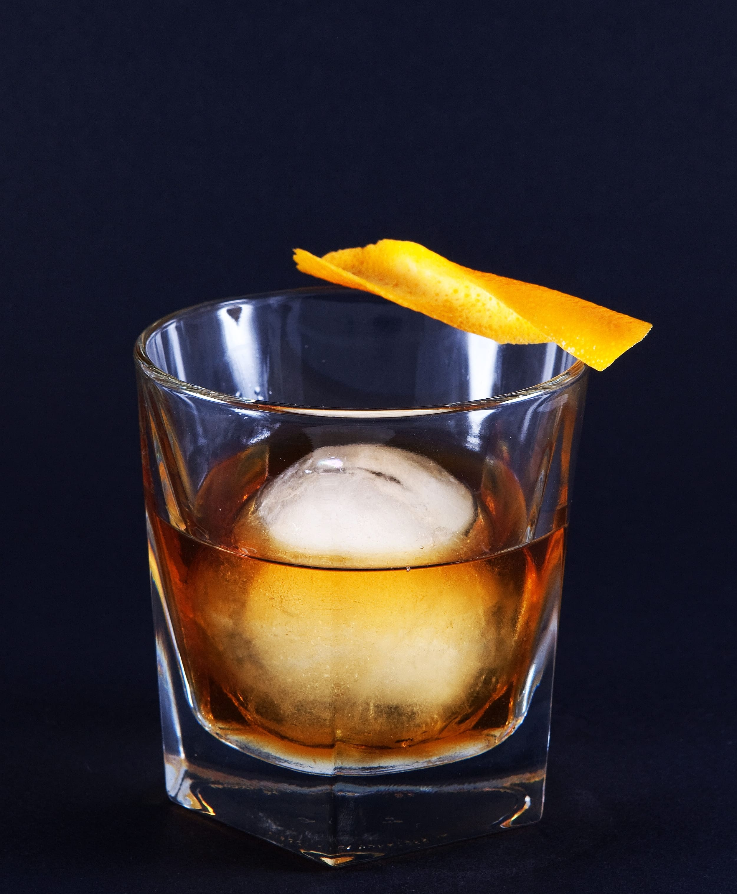

Old Fashioned
올드 패션드
#조용한 밤 #발라드 #쌉쌀하고 깊은 #탄산 없음 #높은 도수

Ingredients
- 버번 위스키 60ml
- 설탕 1개
- 앙고스투라 비터스 2dashes
- 오렌지 껍질
- 얼음 100g
- 장식용 체리
Recipe
- 먼저, 작은 잔에 설탕과 앙고스투라 비터스를 넣고, 약간의 물을 추가하여 설탕을 녹입니다.
- 버번 위스키 60ml를 넣고, 얼음을 추가합니다.
- 잘 저어준 후, 오렌지 껍질을 짜서 향을 더합니다.
- 마지막으로 장식용 체리를 올려주면 완성!
History
올드 패션드는 종종 ‘칵테일의 아버지’라 불립니다.
이는 1806년에 처음으로 ‘칵테일’이라는 단어가 정의된 이후, 가장 오랫동안 사랑받아온 칵테일 중 하나이기 때문입니다. 그 당시의 칵테일은 주로 스피릿, 물, 설탕, 비터즈로 만들어졌는데, 바로 이 네 가지 기본 재료가 오늘날 올드 패션드의 핵심입니다.
드라마 매드맨(Mad Man)에서 돈 드레이퍼의 칵테일로 유명해진 올드 패션드(Old Fashioned)는 18세기에 위통약으로 쓰였던 비터스를 삼키기 어려워 증류주와 설탕, 물 등을 섞어 마시던 것이 기원이 되었습니다. 이를 당시에는 비터드 슬링(Bittered Sling)이라고 불렀다. 이후 여러 가지 영향으로 많은 변화를 겪어 다양한 레시피가 만들어졌습니다.
현대에 와서 유래는 미국 켄터키주의 벤텐스클럽에 모여든 경마팬을 위해 만들어진 칵테일이라고 합니다. 당시 유행하던 '토디(Tody)'와 맛과 형태가 비슷해 지난날의 기억을 되살려 준다는 의미로 붙은 이름이 '올드 패션드(Old Fashioned)입니다. 이 칵테일은 전용 글라스까지 있을 정도로 인기가 많습니다.